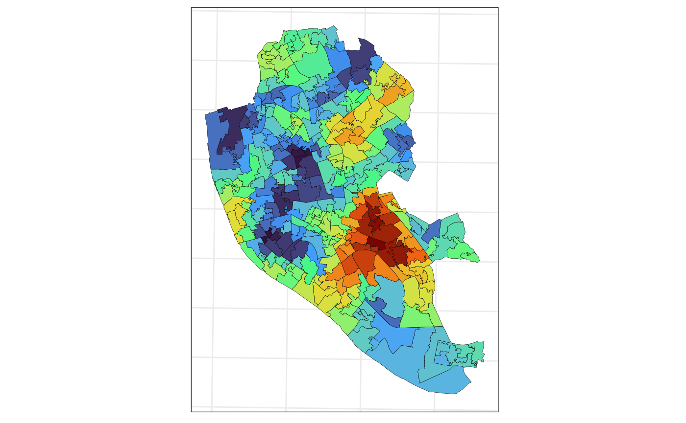

If interested in the theory involving this calculations, take a look at this vignette.
These functions will work only for planar projections. If working with a spherical projection, we recommend using a powered exponential covariance function with .
library(smile)
library(ggplot2)
library(sf)
#> Linking to GEOS 3.10.2, GDAL 3.4.1, PROJ 8.2.1; sf_use_s2() is TRUEConsidering the same setup used in the vignette about converting
sf to spm objects, we
are going to predict the Life Expectation at Birth (LEF) score (observed
at the Middle Super Output Areas (MSOA), in Liverpool, into the Lower
Super Output Area (LSOA). In this second level, we have the Life
Expectancy at Birth for each area. This data is available in the package
and was made available by Johnson, Diggle, and
Giorgi (2020).
The code below loads the data and converts the LSOA sf
object into a spm object. We are going to use numerical
integration (based on a 500 points grid) with the precision of the
integrals varying according to the size of each MSOA region. We are
interested in a variable called "leb_est" available only at
the liv_msoa dataset.
data(liv_msoa)
data(liv_lsoa)
## workaround for compatibility with different PROJ versions
st_crs(liv_msoa) <-
st_crs(liv_msoa)$input
st_crs(liv_lsoa) <-
st_crs(liv_lsoa)$input
## msoa from sf to spm
spm_msoa <-
sf_to_spm(sf_obj = liv_msoa,
n_pts = 500,
type = "regular",
by_polygon = FALSE,
poly_ids = "msoa11cd",
var_ids = "leb_est")Next, we assume the following model, at the grid level, drives the data1
where , and , with . The form of the covariance functions considered here are written as follows . Where is a stationary and isotropic correlation function. To check the families of correlation functions available in our package, check this link. Another important detail is that, if we make , the estimation process is slightly easier. The package allows for the two parametrizations.
For this problem we are going to consider the the Matérn covariance
function. The model will be fitted with
,
this the parameter controls the smoothness of the spatial process. Also,
for simplicity, we are going to ignore
.
Next, we evaluate the AIC associated with three models. The function
fit_spm fits the models and needs starting values for
(and
or
,
if you decide not to ignore the small scale variation), the covariance
model to be used is informed as a string in the argument
model, the available options are
c("matern", "pexp", "gaussian", "spherical"). Notice that,
when not inputting an initial value for
(or
),
we are forcing this parameter to be 0. Also, the theta_st
argument (which takes the initial values for the parameters), must be a
named vector. If we input initial values for
,
,
,
and
(or
),
the likelihood is optimized numerically for all the parameters. If we
omit
and
,
then a profile likelihood approach is used to find numerically
and, if wished,
.
While,
and
have closed form expressions (Diggle and Ribeiro
2007). Additionally, the commented part of the code below shows
how to proceed to estimate
(or
)
from the data. The argument apply_exp is a workaround for
parameters that cannot be negative. The arguments
opt_method and control are passed to the
function optim. opt_method controls the
optimization algorithm to be used, while control inputs
control arguments for such optimization algorithms, for more details see
optim.
theta_st_msoa <- c("phi" = 1)
## 1) it is important to NAME the initial values for each parameter
## 2) to estimate "nu" from the data we only need to provide an initial value for such
## parameter
## 3) uncomment the code below to do so.
## 4) Note that it is possible to set the boundaries for the parameter space on
## which we want to optmize the likelihood.
## theta_st_msoa <- c("phi" = 1, "nu" = 1)
## fit_msoa1 <-
## fit_spm(x = spm_msoa,
## theta_st = theta_st_msoa,
## model = "matern",
## nu = .5,
## lower = c(1e-16, 1e-16),
## upper = c(Inf, 1),
## opt_method = "L-BFGS-B",
## control = list(maxit = 500))
fit_msoa1 <-
fit_spm(x = spm_msoa,
theta_st = theta_st_msoa,
model = "matern",
nu = .5,
apply_exp = TRUE,
opt_method = "L-BFGS-B",
control = list(maxit = 500))
fit_msoa2 <-
fit_spm(x = spm_msoa,
theta_st = theta_st_msoa,
model = "matern",
nu = 1.5,
apply_exp = TRUE,
opt_method = "L-BFGS-B",
control = list(maxit = 500))
fit_msoa3 <-
fit_spm(x = spm_msoa,
theta_st = theta_st_msoa,
model = "matern",
nu = 2.5,
apply_exp = TRUE,
opt_method = "L-BFGS-B",
control = list(maxit = 500))The AIC2 associated with each model is given below. According to this criterion, the best model is the one with .
c("m1" = AIC(fit_msoa1), "m2" = AIC(fit_msoa2), "m3" = AIC(fit_msoa3))
#> m1 m2 m3
#> 295.2008 295.8445 296.3600We can retrieve the estimated parameters and the associated
(1 - sig) % confidence intervals by using the function
summary_spm_fit as follows
summary_spm_fit(fit_msoa1, sig = .05)
#>
#> optimization algorithm converged: yes
#>
#> par estimate se ci
#> 1 mu 75.9479977 0.8112112 [74.358; 77.538]
#> 2 sigsq 23.0875619 4.1812494 [14.892; 31.283]
#> 3 phi 0.8370629 0.2183420 [0.409; 1.265]Finally, we have almost everything we need to perform predictions at
the LSOA areas. The function predict_spm calculates the
predictions associated to the spm_obj (which contains the
results associated with a fitted model) into a sf object
given as an input for the argument x. We need to specify
whether we want to “aggregate” (i.e. average) the predicted surface over
the polygons associated with the sf data. The number of
points and the type of integration for prediction need to be set as
well. In this case we are specifying a finer grid (3500 points) because
the LSOA areas are smaller than the MSOA areas.
pred_lsoa <- predict_spm(x = liv_lsoa, spm_obj = fit_msoa1, id_var = "lsoa11cd")
#> Warning: st_centroid assumes attributes are constant over geometriesThe resulting object is a list with entries "mu_pred",
"sig_pred", "pred_grid",
"pred_agg". The first two positions correspond to the mean
and covariance matrix at the predicted locations, respectively.
"pred_grid" can be seen as the predicted surface over the
study region, while "pred_agg" contains the (integrals)
averages of such surface within each LSOA area. The chunk of code below
plots the predicted life expectancy at the LSOA areas.
ggplot(data = pred_lsoa$pred_agg,
aes(fill = mu_pred)) +
geom_sf(color = 1,
lwd = .1) +
scale_fill_viridis_c(option = "H") +
guides(fill = "none") +
theme_bw() +
theme(axis.text = element_blank(),
axis.ticks = element_blank())
Next, we plot the standard errors associated with the predictions.
ggplot(data = pred_lsoa$pred_agg,
aes(fill = se_pred)) +
geom_sf(color = 1,
lwd = .1) +
scale_fill_viridis_c(option = "H") +
guides(fill = "none") +
theme_bw() +
theme(axis.text = element_blank(),
axis.ticks = element_blank())